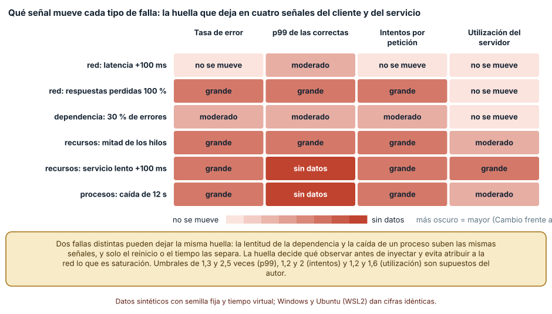
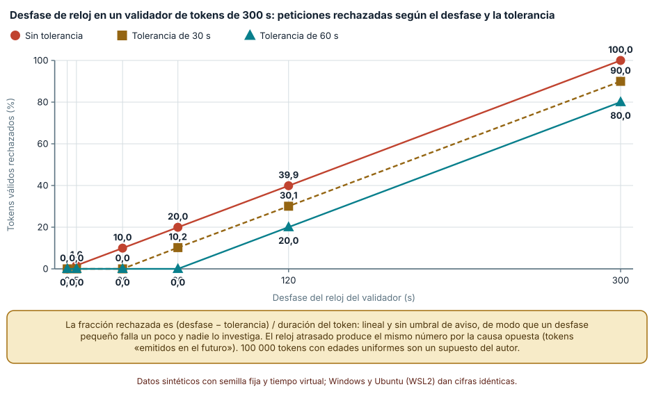
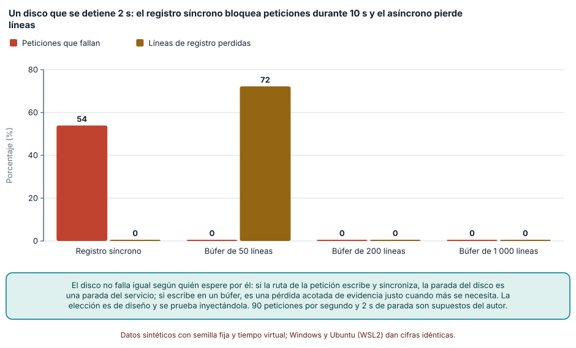

← SE-507 — Inyección de fallos de red, latencia y dependencias · ↑ Parte 42 · 📚 Índice completo · 🌐 Portal · SE-509 — Caos en Kubernetes y en plataformas cloud →
Punto profesional y fundamento pedagógico
Punto profesional. La clase existe para que elijas qué falla inyectar según el evento real que representa, para que sepas qué señal mueve cada tipo de falla (su huella) y para que distingas fallas que parecen iguales desde fuera y se corrigen de forma distinta. Un catálogo de fallas organizado por herramienta («lo que Chaos Mesh ofrece») es un menú; uno organizado por mecanismo (red, recursos, dependencias, reloj, discos, procesos) es un mapa de riesgos.
Por qué aparece aquí. Sigue a SE-507: allí se inyectaron fallas de red, de latencia y de dependencias en un cliente; aquí se completa el catálogo con las fallas de recursos e infraestructura (CPU, memoria, hilos, disco, reloj y procesos) y se organiza todo por mecanismo. Usa los fallos parciales y los relojes de la Parte 32 (SE-388, SE-389) y las señales de la Parte 41 (SE-493). El caso conductor es el cliente de la API de entregas y su dependencia, el almacenamiento de archivos.
Error conceptual que debe corregir. Creer que «inyectar latencia» es una sola falla. La lentitud de la red (el servidor responde y tarda en llegar) y la lentitud de la dependencia (el servidor retiene recursos mientras responde) producen huellas y daños distintos: la primera no sobrecarga a nadie, la segunda satura los hilos.
Secuencia de aprendizaje. Antes de ver los resultados predices qué señales mueve cada una de seis fallas, cuántas peticiones rechaza un validador de tokens según el desfase de su reloj y qué le ocurre a un servicio cuyo disco se detiene dos segundos. Después contrastas la predicción con tres experimentos y escribes el catálogo de fallas de tu servicio por mecanismo. ICAP distingue participación de construcción de conocimiento; How People Learn II respalda diseñar la práctica con contextos reales y retroalimentación.
Evidencia de aprendizaje. fallas-log.md con la predicción, las tres figuras reproducidas, un catálogo de al menos doce fallas organizadas por mecanismo con la señal que mueve cada una, y una nota que separe lo que el experimento muestra de lo que habría que comprobar en un sistema real.
Límite de la conclusión. El servicio, las fallas, el desfase de reloj y el disco son modelos sintéticos de tiempo virtual y semilla fija. No se tocó ningún reloj, red ni disco reales; las cifras muestran un mecanismo, no el comportamiento de tu infraestructura.
Trazabilidad fuente → afirmación
| Fuente primaria u oficial | Afirmación que respalda | Lo que no prueba |
|---|---|---|
| Principles of Chaos Engineering | Pide variar eventos del mundo real, priorizados por impacto o frecuencia: servidores que fallan, fallos de software como respuestas mal formadas y eventos que no son fallas, como un pico de tráfico o un escalado. | No da el catálogo de tu sistema. |
| Chaos Mesh: tipos de experimentos | Ofrece fallas de pod, red (partición, emulación de mala red), estrés, E/S de ficheros, DNS, tiempo, JVM, núcleo, HTTP y dispositivos de bloque. | No dice cuáles te hacen falta. |
| Linux tc-netem | Emula en el kernel retraso, pérdida, corrupción, duplicación y reordenamiento de paquetes. | No describe cómo reaccionará tu aplicación. |
| Google SRE: Addressing Cascading Failures | Describe cómo la falta de recursos (CPU, memoria, hilos, descriptores) y la lentitud de una dependencia propagan una falla local. | No mide tus recursos. |
Antes de empezar
Recupera lo aprendido en SE-506 y SE-507: un experimento tiene radio, aborto y reversión, y una falla de latencia o de dependencia deja una huella en el cliente. La pregunta activa es: si el almacenamiento «falla», ¿qué le pasó exactamente: tarda más, devuelve error, no responde, perdió hilos, se reinició o le cambió el reloj, y cómo lo distingues mirando tus señales?
Prerrequisitos
- Haber completado
SE-506ySE-507o poder escribir la especificación de un experimento y leer su efecto en un cliente. - Conocer fallos parciales y modelos de red (
SE-389) y la noción de duración inclusiva deSE-493. - Python 3.11 o posterior; los experimentos usan solo la biblioteca estándar.
Problema auténtico
El equipo de la API de entregas pide «una prueba de falla del almacenamiento» y recibe tres: una añade 100 ms de latencia en el cable, otra hace lenta a la dependencia 100 ms y la tercera la detiene 12 s. La primera no daña a nadie, la segunda deja el cliente en 0 % de respuestas correctas y la tercera lo mantiene caído un minuto más. Los tres informes dicen «falla del almacenamiento» y recomiendan lo mismo («subir la espera a 1 s»), que solo corrige una de las tres y agrava las otras dos. La causa no es el cliente sino el catálogo: las fallas se nombraron por el síntoma («lento», «caído») y no por el mecanismo que las produce.
Objetivos observables
Al terminar podrás:
- clasificar fallas por mecanismo (red, recursos, dependencias, reloj, discos, procesos) y por evento real que representan;
- leer la huella de una falla en cuatro señales (error, latencia, intentos y utilización) y decir cuáles fallas son indistinguibles;
- calcular qué fracción de las peticiones rechaza un validador de tokens según el desfase de reloj y su tolerancia;
- comparar el registro síncrono y el asíncrono frente a una parada de disco y decir qué se pierde en cada caso;
- escribir un catálogo priorizado de fallas con evento real, señal y hipótesis.
Mapa conceptual
Ver la notación fuente del diagrama
flowchart LR
A[Evento real: servidor cae, disco se llena, reloj se desfasa] --> B[Mecanismo de falla]
B --> C[Red]
B --> D[Recursos]
B --> E[Dependencias]
B --> F[Reloj]
B --> G[Discos]
B --> H[Procesos]
C & D & E & F & G & H --> I[Huella en las señales]
I --> J[Hipótesis y experimento]El mapa parte del evento y no de la herramienta: el mecanismo determina qué se puede inyectar y la huella determina qué hay que mirar. Dos mecanismos distintos pueden dejar la misma huella, y por eso el experimento incluye la señal que los separa.
Temas y por qué importan
| Tema | Por qué cambia una decisión profesional | Evidencia mínima |
|---|---|---|
| Fallas de red | Retraso, pérdida y partición se comportan distinto en el cliente. | Predicción, traza causal y contraejemplo de Fallas de red en fallas-log.md |
| Fallas de recursos y procesos | Quitar capacidad no es lo mismo que quitar respuestas. | Predicción, traza causal y contraejemplo de Fallas de recursos y procesos en fallas-log.md |
| Fallas de dependencias | Los errores parciales prueban reintentos y cortacircuitos. | Predicción, traza causal y contraejemplo de Fallas de dependencias en fallas-log.md |
| Fallas de reloj | El desfase falla poco y sin aviso. | Predicción, traza causal y contraejemplo de Fallas de reloj en fallas-log.md |
| Fallas de disco | Quien espera por el disco hereda su parada. | Predicción, traza causal y contraejemplo de Fallas de disco en fallas-log.md |
Conceptos y decisiones
1. Seis mecanismos y el evento real que cada uno representa
Los principios piden que las variables del experimento reflejen eventos reales, priorizados por su impacto potencial o su frecuencia estimada, e incluyen fallos de hardware (servidores que mueren), de software (respuestas mal formadas) y eventos que no son fallas, como un pico de tráfico o un escalado. Seis mecanismos cubren casi todo lo inyectable.
| Mecanismo | Eventos reales que representa | Qué se inyecta |
|---|---|---|
| Red | cable saturado, paquetes perdidos, partición, DNS que no resuelve | retraso, pérdida, duplicación, reordenamiento, corte; en Kubernetes, NetworkChaos y DNSChaos |
| Recursos | CPU agotada, memoria presionada, hilos o descriptores de fichero consumidos | carga de CPU y memoria (StressChaos), reducción de hilos o de conexiones |
| Dependencias | un servicio devuelve errores, tarda, responde con datos mal formados o cambia de contrato | errores y retrasos en un proxy, respuestas alteradas |
| Reloj | un nodo con la hora desfasada, un salto por sincronización | desplazamiento de reloj (TimeChaos) o un reloj simulado en la prueba |
| Discos | disco lleno, lento, de solo lectura o con errores de E/S | latencia y errores de E/S (IOChaos), llenado, dispositivo bloqueado |
| Procesos | proceso terminado, pausado, reiniciado en bucle, OOM | terminación, pausa, reinicio (PodChaos), aislamiento de instancia |
La tabla es solo un índice. Cada fila genera varias fallas con intensidades distintas, y la herramienta (SE-509) es un medio, no el criterio. La documentación de Chaos Mesh enumera, por ejemplo, para la red: partición, emulación de mala red (retraso, pérdida de paquetes, reordenamiento), límite de ancho de banda; y para el resto, tipos de experimento de pod, estrés, E/S, DNS, tiempo, JVM, núcleo, HTTP y dispositivos de bloque. tc-netem, en el kernel de Linux, produce el retraso, la pérdida, la corrupción, la duplicación y el reordenamiento de paquetes que esas herramientas aprovechan.
2. La huella de una falla en cuatro señales
Una falla se reconoce por lo que mueve. Se miden cuatro señales del cliente y del servicio: la tasa de error de las personas usuarias, el p99 de las peticiones correctas, los intentos por petición que envía el cliente y la utilización de los hilos de la dependencia. Se inyectan seis fallas de 30 s sobre la configuración C de SE-507 (90 peticiones por segundo) y se clasifica cuánto se mueve cada señal frente a la línea base sana (error de 0 %, p99 de 87 ms, 1 intento, utilización de 48 %).
base = simulate(11, policy, [], duration_s=90, rate=90)
fala = simulate(11, policy, [Fault("slow", 30, 60, 100)], duration_s=90, rate=90)
huella = (1 - s["ok"], p99, s["attempts"], fala.busy_ms / (8 * 90_000))
Cómo leer la figura. Cada fila es una falla y cada columna una señal; el texto de la celda dice cuánto se movió frente a la línea base («no se mueve», «moderado», «grande» o «sin datos» si no hay peticiones correctas con las que calcular el p99). La latencia de red de 100 ms mueve solo el p99 (de 87 a 187 ms, 2,2 veces) y deja intactos errores, intentos y utilización: nadie la nota excepto quien mide la latencia. La falta de respuesta produce 97,5 % de errores, un p99 de 774 ms en las pocas peticiones que pasan y casi 3 intentos por petición, y baja la utilización a 0,67 veces, porque la dependencia no recibe trabajo útil. Los 30 % de errores mueven poco los errores finales (2,3 %, porque los reintentos los absorben), algo el p99 (1,9 veces) y 1,37 intentos. La pérdida de la mitad de los hilos y la lentitud de la dependencia suben la utilización 1,4 y 1,8 veces. La caída de un proceso, 1,5 veces, es casi indistinguible de la lentitud: 100 % de errores, 3 intentos y utilización alta. Dónde deja de valer: los umbrales de «moderado» (1,3 veces para p99, 1,2 para intentos y utilización, 1 % de errores) y de «grande» (2,5, 2, 1,6 y 20 %) son supuestos del autor; con otros, una celda cambia de categoría, pero el patrón no.
Tres consecuencias. La falla de red de solo latencia es inocua para el cliente, pero no para quien lo observa: solo se ve si se mide la latencia. La pérdida de hilos (capacidad) y la lentitud (tiempo de servicio) dejan huellas parecidas y se separan por lo que cambió en la dependencia, no por lo que ve el cliente. Y la falta de respuesta, que es la falla más sencilla de inyectar, produce una huella única: es la única que baja la utilización.
3. El reloj: una falla que falla poco y sin aviso
Un reloj desfasado no rompe el servicio de golpe: rechaza una fracción de peticiones proporcional al desfase. Un validador de tokens con duración de 300 s recibe tokens cuya edad real está uniformemente repartida entre 0 y 300 s. Si el validador va adelantado s segundos, ve cada token s segundos más viejo y rechaza los que superan duración + tolerancia; si va atrasado, ve tokens emitidos «en el futuro» y rechaza los que lo parecen en más que la tolerancia. En ambos casos la fracción rechazada es max(0, (s − tolerancia) / duración). Se simulan 100 000 tokens por celda con tres tolerancias y seis desfases.

Cómo leer la figura. Cada línea es una tolerancia y cada punto, el porcentaje de tokens válidos rechazados con ese desfase. Sin tolerancia, 5 s de desfase rechazan 1,6 %, 30 s rechazan 10 % y 120 s rechazan 40 %; con 300 s se rechaza todo. Con tolerancia de 30 s no hay ningún rechazo hasta 30 s de desfase, y con 60 s de tolerancia, hasta 60. A partir de ahí la fracción crece sin salto. Dónde deja de valer: el modelo supone edades uniformes y un solo validador; con tokens de vida corta, el mismo desfase rechaza más; con varios validadores desfasados distinto, los usuarios ven fallas intermitentes según a cuál lleguen. Como la fracción es lineal y pequeña, un desfase de 5 s falla 1,6 % de las veces y casi nadie lo investiga: es una falla que vive en la cola del indicador.
4. El disco: quien espera por él hereda su parada
Un disco que se detiene dos segundos (un respaldo, un fsync bloqueado, un volumen de red) afecta a quien lo espera en la ruta de la petición. Si el servicio escribe su registro de forma síncrona (cada petición escribe y sincroniza antes de responder), la parada del disco es una parada del servicio. Si lo escribe de forma asíncrona en un búfer, el disco no bloquea a nadie, pero el búfer se llena y se pierden líneas. Se modela con 90 peticiones por segundo y una parada de 2 s: el síncrono se simula como una dependencia que retiene cada petición 2 000 ms durante la parada; el asíncrono, como un búfer de 50, 200 o 1 000 líneas que se llena con 90 líneas por segundo.

Cómo leer la figura. El primer par de barras es el registro síncrono: 54 % de las peticiones de los 10 s siguientes al inicio de la parada fallan (la parada de 2 s deja una cola que tarda en drenar) y no se pierde ninguna línea. Los otros tres son el registro asíncrono: ninguna petición falla, y un búfer de 50 líneas pierde 130 de las 180 emitidas durante la parada (72 %), mientras que uno de 200 o de 1 000 no pierde ninguna. Dónde deja de valer: el síncrono se modeló como lentitud de 2 s por petición, y un disco real puede fallar con errores, no solo con espera; el asíncrono supone que el vaciado reanuda a su ritmo. La elección es de diseño: sincronía protege la evidencia y expone al servicio; asincronía protege al servicio y arriesga la evidencia justo cuando más se necesita. Solo inyectando la parada se sabe cuál de las dos dimensiones es el límite.
5. Elegir qué inyectar: frecuencia, impacto y novedad
Con seis mecanismos y decenas de intensidades, el catálogo se prioriza con tres criterios. La frecuencia estimada: los reinicios de proceso y la lentitud de dependencias ocurren cada semana; la pérdida de un centro de datos, cada pocos años. El impacto potencial: lo que daña a todas las personas importa más que lo que daña a un curso. Y la novedad: una falla que el equipo nunca ha vivido tiene más probabilidad de revelar una debilidad que una repetida. El resultado es una lista corta, con el evento real, el mecanismo, la señal esperada y la hipótesis; SE-511 la usa para elegir los escenarios de un día de práctica y SE-512 para construir la suite de la integración continua.
Definiciones de trabajo
- falla inyectada: condición adversa introducida de forma deliberada y controlada para observar el comportamiento del sistema.
- mecanismo de falla: categoría de evento real que la falla representa: red, recursos, dependencias, reloj, discos o procesos.
- huella de una falla: patrón de cambios que la falla deja en las señales del sistema.
- latencia de red: retraso en la entrega de los datos que no retiene recursos del servidor.
- lentitud de la dependencia: mayor tiempo de servicio que retiene hilos y otros recursos mientras dura.
- desfase de reloj: diferencia entre la hora de un componente y la hora de referencia.
Las definiciones son operativas para el cliente de la API de entregas. No convierten términos con una historia más amplia en sinónimos y deben contrastarse con las fuentes enlazadas.
Ejemplo mínimo
El fragmento calcula la fracción de tokens válidos rechazados por un validador adelantado s segundos, con vida de 300 s y tolerancia t. Antes de ejecutarlo, predice el resultado con s = 45 y t = 15.
def rechazados(s: float, t: float, vida: float = 300.0) -> float:
return max(0.0, min(1.0, (s - t) / vida))
print(rechazados(45, 15), rechazados(45, 0), rechazados(10, 30))Imprime 0.1 0.15 0.0. Con 45 s de desfase y 15 s de tolerancia se rechaza 10 %; sin tolerancia, 15 %; y con tolerancia mayor que el desfase, nada. Registra versión de Python, comando y salida; luego decide qué tolerancia aceptas si tus tokens duran 60 s.
Ejemplo profesional
Supón, como caso hipotético y no como medición, que el equipo ordena su catálogo para la API de entregas con doce filas. De red: «latencia de 100 ms entre la API y el almacenamiento» (hipótesis: el p99 sube, la tasa de error no) y «corte de 12 s» (los reintentos con pausa mantienen 99 % de entregas aceptadas). De recursos: «mitad de los hilos del almacenamiento» y «memoria al 90 %». De dependencias: «30 % de errores» (la alternativa se sirve menos de 1 % del tiempo) y «respuestas con el contrato anterior». Del reloj: «nodo del validador con 60 s de adelanto» (el rechazo es menor de 2 %). De discos: «parada de 2 s del disco de registro» y «disco lleno». De procesos: «terminación de un proceso de cada tres» y «reinicio en bucle». Cada fila lleva frecuencia, impacto, novedad y la señal que la distingue de las vecinas, y el equipo ejecuta primero las cuatro de mayor puntaje.
Práctica guiada
- Predice, por escrito, cuáles de las seis fallas dejan una huella indistinguible y cuál es la única que baja la utilización.
- Ejecuta
python scripts/experiments_part42_a.py e508y compara; anota la mayor diferencia con tu predicción. - Cambia la tolerancia del validador a 120 s y calcula el desfase máximo que absorbe con tokens de 300 s.
- Cambia el búfer de registro a 120 líneas y encuentra la parada de disco más larga que no pierde líneas.
- Escribe el catálogo de al menos doce fallas de un servicio propio por mecanismo, con evento real, señal y puntaje de frecuencia, impacto y novedad.
- Entrega
fallas-log.mdy pide a otra persona que identifique dos fallas de tu catálogo que serían indistinguibles con tus señales.
Ejercicios
- Mecanismo: clasifica seis eventos (un
fsyncbloqueado, un salto de NTP, una regla de firewall mal puesta, un OOM, una respuesta JSON truncada, un pico de tráfico) en red, recursos, dependencias, reloj, discos o procesos, y di cuáles no son fallas. - Huella: con latencia de 100 ms, pérdida de 5 % de paquetes y corte total, escribe qué señales mueve cada una en el cliente de
SE-507y cuál es la más barata de detectar. - Reloj: un validador con tolerancia de 30 s y tokens de 120 s soporta un desfase de 20 s; calcula la fracción rechazada con 60 s y con 90 s.
- Disco: a 200 líneas de registro por segundo y una parada de 3 s, calcula el tamaño mínimo del búfer que no pierde líneas y el costo de memoria con líneas de 300 bytes.
Reto verificable
Entrega fallas-log.md con la predicción, las tres tablas de resultados reproducidas con las mismas semillas, el catálogo de al menos doce fallas con su puntaje y las dos parejas de fallas indistinguibles que identificaste, con la señal que las separaría. Se aprueba si otra persona ejecuta el código desde un checkout limpio, obtiene las mismas cifras y propone una falla real de su servicio que tu catálogo no contiene. No se aprueba por listar herramientas ni por afirmar que «con latencia y caída de nodos se cubre todo».
Caso conductor
El cliente de la API de entregas sigue siendo el caso conductor. Esta clase deja el cuarto artefacto: un catálogo de fallas por mecanismo con su huella. SE-509 elige las herramientas que las inyectan y SE-511 las ordena en un día de práctica. Cambia después un solo dato, la tolerancia del validador, y observa a partir de qué desfase un nodo mal sincronizado empieza a rechazar entregas.
Preguntas frecuentes
¿Por qué distinguir la latencia de red de la lentitud del servidor?
Porque producen daños distintos. La latencia de red retrasa la respuesta pero no retiene hilos del servidor: el cliente sufre sus esperas y nadie más. La lentitud del servidor mantiene ocupados los hilos de la dependencia, y con tráfico alto la satura. Una prueba con solo la primera da una falsa sensación de resistencia.
¿Se puede inyectar el reloj en producción?
Con mucho cuidado, porque un desfase de reloj afecta a certificados, tokens, tareas programadas y replicación, y se extiende a todo lo que corre en el nodo. Lo habitual es inyectarlo en un entorno de prueba, o simularlo en la prueba (un reloj que se pasa como dependencia) y reservar la inyección real para un nodo aislado.
¿Todas las fallas valen la pena?
No. Se priorizan por frecuencia, impacto y novedad, y se descartan las que el sistema no puede resistir por diseño (la pérdida de la única copia de un dato). Una falla que no se puede resistir se prueba en la fase de recuperación (SE-440), no como experimento de resistencia.
¿Qué hago con dos fallas que dejan la misma huella?
Añade la señal que las separa (el reinicio, el estado de la dependencia, los registros del sistema operativo) o acepta que el diagnóstico en producción las confundirá y escribe el runbook para ambas. SE-503, el taller de diagnóstico con telemetría incompleta, practica esa decisión.
Fallo controlado y diagnóstico
Reproduce el fallo clásico de la clase: probar «la falla del almacenamiento» con una sola intensidad y un solo mecanismo. Aplica la latencia de red de 100 ms al cliente C de SE-507 y declara resiliente al sistema; después aplica la lentitud de la dependencia de 100 ms.
Registra síntoma, entrada mínima, hipótesis, observación que descarta cada hipótesis, causa, corrección y prueba de regresión. Síntoma: la prueba de latencia pasa con 100 % de entregas correctas y la lentitud de la dependencia deja 0 %. Hipótesis rivales: (a) el cliente es inconsistente; (b) la segunda prueba tiene más carga; (c) las dos fallas son mecanismos distintos. Prueba: mide la utilización de la dependencia en ambas; si en la primera permanece en 48 % y en la segunda sube a 85 % con 3 intentos por petición, la hipótesis (c) explica la diferencia. Conclusión: la latencia de red no retiene recursos y la lentitud sí. Regresión: añade al catálogo una prueba por cada mecanismo y exige que ninguna entrada se declare resiliente por una sola. No cambies a la vez el mecanismo y la intensidad.
Errores comunes y cómo corregirlos
| Síntoma | Causa probable | Corrección |
|---|---|---|
| «La prueba de latencia pasó» y el servicio cae en producción | Se probó latencia de red y no lentitud de la dependencia | Separar los dos mecanismos en el catálogo |
| Dos fallas se corrigen con el mismo parche | Se nombraron por el síntoma | Nombrar por mecanismo y señal |
| Rechazos intermitentes de tokens | Desfase de reloj en uno de varios nodos | Medir el desfase y fijar una tolerancia acorde |
| Se pierde el registro justo durante el incidente | Búfer asíncrono pequeño | Dimensionar el búfer con la parada máxima esperada |
| El catálogo crece sin orden | Sin criterio de prioridad | Puntuar frecuencia, impacto y novedad |
Entorno y archivos clave
work/SE-508/
├── README.md
├── fallas/
│ ├── catalogo.yaml
│ ├── huella.py
│ └── reloj.py
├── tests/test_fallas.py
└── evidence/fallas-log.mdEl README declara plataforma, versión de Python, semillas y comandos. Los experimentos usan solo la biblioteca estándar y se ejecutaron con CPython 3.12.9 en Windows 11 y 3.12.3 en Ubuntu bajo WSL2 con resultados idénticos. Para recuperar el estado, borra work/SE-508/ y vuelve a ejecutar los scripts. Si añades una dependencia, fija procedencia y versión.
Seguridad, ética y accesibilidad
- inyectar fallas de red, reloj o disco en un entorno compartido afecta a otras personas: se coordina, se limita al entorno acordado y se avisa;
- las fallas de reloj afectan a certificados y tokens: no las apliques a sistemas con datos reales sin aislarlos;
- los privilegios que exigen las herramientas de inyección (acceso al nodo, a las reglas de red, al sistema de ficheros) son un riesgo en sí mismos y se otorgan con el mínimo alcance (
SE-513); - documenta las tablas y las figuras con texto alternativo y en un formato que un lector de pantalla pueda recorrer;
- respeta las licencias de los libros y artículos y atribuye lo adaptado.
Puente hacia el trabajo con agentes
Un agente al que se le pide «prueba que el servicio resiste fallas de red» tenderá a añadir latencia de un solo valor y a declarar éxito. Pídele en cambio que parta del catálogo por mecanismo, que ejecute cada falla con tres intensidades, que reporte la huella en las cuatro señales y que señale las parejas indistinguibles. Revisa especialmente si confunde latencia de red con lentitud de la dependencia, si toca el reloj del sistema donde corre y si ejecuta una falla sin aborto.
Transferencia
Traslada el catálogo a otro servicio (una pasarela de pagos, un buscador): clasifica sus fallas por mecanismo, puntúa frecuencia, impacto y novedad, y escribe la señal que distingue cada par ambiguo. La transferencia está lograda cuando puedes decir qué dos de tus fallas no se distinguirían en producción, no cuando el catálogo es largo.
Evaluación y evidencia
| Criterio | Evidencia para aprobar |
|---|---|
| comprensión | explicación de mecanismo, huella y diferencia entre latencia de red y lentitud de la dependencia |
| corrección | huellas, rechazos por reloj y pérdidas de registro reproducibles con las mismas semillas |
| diseño | catálogo por mecanismo con evento real, señal y prioridad |
| diagnóstico | reproducción del fallo «una sola intensidad y un solo mecanismo» con regresión |
| incertidumbre | declaración de que el servicio, el reloj y el disco son modelos sintéticos |
| reproducibilidad | versiones, comandos, salida y límites declarados |
Fuentes
- Principles of Chaos Engineering — variar eventos reales y priorizar por impacto o frecuencia; autoridad: documento vivo de la comunidad de ingeniería del caos.
- Chaos Mesh: Simulate Network Faults — tipos de falla de red y lista de tipos de experimento; autoridad: documentación del proyecto Chaos Mesh.
- Linux tc-netem(8) — emulación de retraso, pérdida, corrupción, duplicación y reordenamiento; autoridad: páginas del manual de Linux.
- Google SRE: Addressing Cascading Failures — recursos y lentitud en las cascadas; autoridad: libro de ingeniería de confiabilidad de Google.
- IETF RFC 5280 — validez temporal de certificados, ejemplo de dependencia del reloj; autoridad: Internet Engineering Task Force.
Cada fuente respalda el mecanismo indicado; ninguna demuestra que 1,6 % de rechazos con 5 s de desfase, 54 % de fallos con disco síncrono o 2,2 veces el p99 se observen en un sistema real. Esa afirmación depende del servicio y de su infraestructura.
Límites y siguiente paso
Se ejecutaron tres experimentos con tiempo virtual y semillas fijas en Windows y Ubuntu (WSL2) con resultados idénticos. No se tocó ningún reloj, red ni disco reales; el servicio de 8 hilos, las seis fallas, la vida de 300 s de los tokens, el búfer y la parada de 2 s son construcciones del autor, y los umbrales de la huella se eligieron para clasificar. La siguiente clase mide, con sockets reales en la máquina local, qué hace un proxy que inyecta fallas y compara las herramientas disponibles.
Glosario
- falla inyectada: condición adversa introducida de forma deliberada y controlada.
- mecanismo de falla: categoría de evento real que la falla representa.
- huella de una falla: patrón de cambios que deja en las señales del sistema.
- latencia de red: retraso en la entrega de datos que no retiene recursos del servidor.
- lentitud de la dependencia: mayor tiempo de servicio que retiene hilos mientras dura.
- desfase de reloj: diferencia entre la hora de un componente y la de referencia.
← SE-507 — Inyección de fallos de red, latencia y dependencias · ↑ Parte 42 · 📚 Índice completo · 🌐 Portal · SE-509 — Caos en Kubernetes y en plataformas cloud →